1072B10 INLET MANIFOLD - R + R AND REPLACE SEAL
- Path
- Procedures > 10 ENGINE > 1072 INLET AND EXHAUST MANIFOLDS > 1072B INLET MANIFOLDS > 1072B10 INLET MANIFOLD - R + R AND REPLACE SEAL
- Kind
- repair procedure (removal / refitting; the operation number is the code)
- Applies to
- all engines; all production periods
- Interactive page
- https://sloeber94.github.io/elrnDB-fUlss/en/#/179007073
Applies to: engines: 3.0 24V V6; all production periods
 Removing
Removing
 Refitting
RefittingPosition the vehicle on a lift.
Disconnect the negative battery terminal.
Description | Connector | |
|---|---|---|
. | Battery | A001B |
Op. 5010B18 CLIMATE CONTROL UNIT AIR INTAKE - R.R.
Op. 5050B34 WINDSCREEN WIPER ARM/S COMPLETE WITH BLADE - R+R
Op. 7210E22 WINDSCREEN BASE TRIM
Op. 1088B10 ENGINE COOLING TANK - R + R
Op. 1016A42 LEFT HAND CYLINDER HEAD IGNITION COIL COVER - R+R
Op. 1048A47 SLEEVE FROM RIGID PIPE TO THROTTLE BODY - R R
Op. 1068A54 POTENZIOMETRO SU COMANDO ACCELERATORE - S. R.
Op. 1072B50 SLEEVES CONNECTING AIR CAPACITY BOX TO INLET MANIFOLD IS - R+R
Op. 1056B62 L/H AND R/H FUEL PIPE ASSEMBLY - WITH INJECTORS - R + R
1. Undo the fixing bolt (1a) and detach the single oil vapour recovery pipe from the cylinder head (1b).
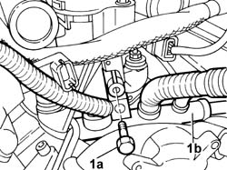
Applies to: engines: 3.0 24V V6; all production periods
1. Undo the fixing nuts (1a), release the mountings (1b), remove the intake manifold (1c) and undo the studs (1d).
Protect the inlet ducts and the injector seats in the cylinder head appropriately.
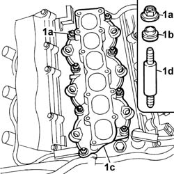
Applies to: engines: 3.0 24V V6; all production periods
Refitting
RemovingRemove the protection from the intake manifolds and the injector seats in the cylinder head.
Tighten the studs.
1. Replace the gaskets (1a) and (1b).
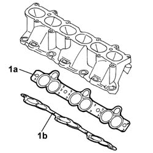
Applies to: engines: 3.0 24V V6; all production periods
Fit the intake manifold.
Position the mountings.
Screw in the fixing nuts and pre-tighten to the recommended torque, following the order illustrated in the diagram below.
Value daNm | Fastening | Component | Ø | |
|---|---|---|---|---|
. | 0.4 | Nuts | INTAKE MANIFOLD - R.R. and replace gasket | - |
Resume the tightening to the recommended torque, following the order illustrated in the diagram until the torque figure is the same for all the nuts.
Value daNm | Fastening | Component | Ø | |
|---|---|---|---|---|
. | 0.8 | Nuts | INTAKE MANIFOLD - R.R. and replace gasket | - |
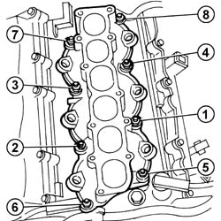
Applies to: engines: 3.0 24V V6; all production periods
Op. 1056B62 L/H AND R/H FUEL PIPE ASSEMBLY - WITH INJECTORS - R + R
Op. 1072B50 SLEEVES CONNECTING AIR CAPACITY BOX TO INLET MANIFOLD IS - R+R
Op. 1068A54 POTENZIOMETRO SU COMANDO ACCELERATORE - S. R.
Op. 1048A47 SLEEVE FROM RIGID PIPE TO THROTTLE BODY - R R
Op. 1016A42 LEFT HAND CYLINDER HEAD IGNITION COIL COVER - R+R
Op. 1088B10 ENGINE COOLING TANK - R + R
Op. 7210E22 WINDSCREEN BASE TRIM
Op. 5050B34 WINDSCREEN WIPER ARM/S COMPLETE WITH BLADE - R+R
Op. 5010B18 CLIMATE CONTROL UNIT AIR INTAKE - R.R.
Op. 7055B54 UNDER-ENGINE GUARD - R R
Disconnect the negative battery terminal.
Description | Connector | |
|---|---|---|
. | Battery | A001B |
Op. 0010T21 COOLANT CHECK DENSITY AND TOP UP IF NECESSARY
Remove the vehicle from the lift.
Applies to: engines: 2.2 16V JTD; all production periods
See in Op. 1016B10
Applies to: engines: 2.0 16V JTD; all production periods
See in Op. 1016B10
Applies to: engines: 2.0 16v; all production periods
Removing
RefittingOp. 5530B56 BATTERY DRIP TRAY COVER - R.R.
- Disconnect the negative battery terminal.
Op. 5010B18 CLIMATE CONTROL UNIT AIR INTAKE - R.R.
See in Op. 1048A10
Op. 1048A39 SLEEVE FROM AIR CLEANER TO RIGID PIPE - R R
Op. 1048A31 RIGID PIPE CONNECTING AIR CLEANER TO INLET MANIFOLD RIGID PIPE R R
Op. 1056B15 THROTTLE BODY INTERGRAL WITH MDS - R R
-
1. Disconnect the electrical connections for the injectors.
2. Disconnect the rapid connector for the fuel supply pipe to the single fuel manifold pipe.
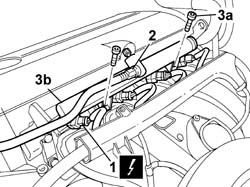
Applies to: engines: 2.0 16v; all production periods
1. Remove the cover for the fuse box (1a), right front, and disconnect the electrical connection (1b).
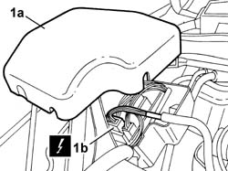
Applies to: engines: 2.0 16v; all production periods
1. Disconnect the electrical connection for the fuel vapour cut out solenoid valve.
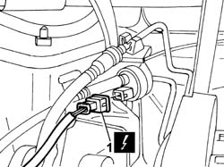
Applies to: engines: 2.0 16v; all production periods
1. Disconnect the electrical connection (1a) from the engine oil temperature sensor and release the wiring (1b) from the plastic retainingn clip.
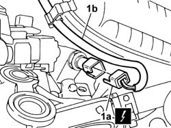
Applies to: engines: 2.0 16v; all production periods
1. Disconnect the electrical connection for the air pressure sensor.
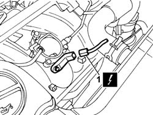
Applies to: engines: 2.0 16v; all production periods
1. Undo the bolts (1a) fixing the wiring duct (1b) and move it aside.
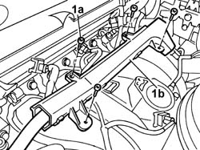
Applies to: engines: 2.0 16v; all production periods
1. Disconnect the rapid connector (1a) and move the brake servo vacuum pipe aside.
2. Adjust the retaining spring (2a) and release the pipe (2b).
3. Undo the fixing bolts (3a) and remove the intake manifold (3b).
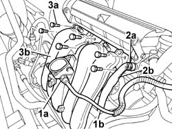
Applies to: engines: 2.0 16v; all production periods
Refitting
Removing- Fit the intake manifold and tighten the fixing bolts to torque.
 | Value - daNm | Fastening | Component | Ø |
|---|---|---|---|---|
. | 1 | Bolt | INLET MANIFOLD | - |
- Connect the rapid connector for the brake servo vacuum pipe.
- Place the wiring duct in position and tighten the fixing bolts.
- Connect the electrical connection for the wiring removed previously and place the fuse box cover in position.
- Connect the electrical connection for the air pressure sensor.
- Connect the electrical connection for the engine oil temperature sensor and fasten the wiring using the plastic retaining clip.
- Connect the electrical connection for the fuel vapour cut out solenoid valve.
- Connect the electrical connection for the wiring and fit the fuse box cover, right front.
- Fit the injector holder single fuel manifold complete with injectors and tighten the fixing bolts.
- Connect the rapid connector for the fuel supply pipe to the single fuel manifold.
- Connect the electrical connections for the injectors.
Op. 1056B15 THROTTLE BODY INTERGRAL WITH MDS - R R
Op. 1048A31 RIGID PIPE CONNECTING AIR CLEANER TO INLET MANIFOLD RIGID PIPE R R
Op. 1048A39 SLEEVE FROM AIR CLEANER TO RIGID PIPE - R R
See in Op. 1048A10
Op. 5010B18 CLIMATE CONTROL UNIT AIR INTAKE - R.R.
-
Topics linked from this page (14)
- 0010T21 ENGINE COOLANT - CHECK DENSITY AND CHANGE, IF NECESSARY
- 1016A42 LEFT HAND CYLINDER HEAD IGNITION COIL COVER - R+R
- 1048A31 RIGID PIPE CONNECTING AIR CLEANER TO INLET MANIFOLD RIGID PIPE R R
- 1048A39 SLEEVE FROM AIR CLEANER TO RIGID PIPE - R R
- 1048A47 SLEEVE FROM RIGID PIPE TO THROTTLE BODY - R R
- 1056B15 THROTTLE BODY INTERGRAL WITH MDS - R R
- 1056B62 L/H AND R/H FUEL PIPE ASSEMBLY - WITH INJECTORS - R + R
- 1072B50 SLEEVES CONNECTING AIR CAPACITY BOX TO INLET MANIFOLD IS - R+R
- 1088B10 ENGINE COOLING TANK - R + R
- 5010B18 CLIMATE CONTROL UNIT AIR INTAKE - R.R.
- 5050B34 WINDSCREEN WIPER ARM/S COMPLETE WITH BLADE - R+R
- 5530B56 BATTERY DRIP TRAY COVER - R.R.
- 7055B54 UNDER-ENGINE GUARD - R R
- 7210E22 WINDSCREEN BASE TRIM